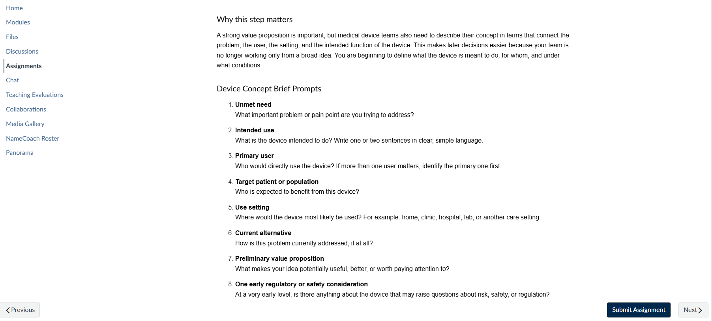

Device Concept Brief: from broad value proposition to clearer innovation framing
In the pre-course customer discovery section, the original materials already introduced stakeholder mapping, value proposition work, and customer discovery interviews. What still felt missing was a structured step that helps learners turn that early discovery work into a clearer device or innovation concept.
- I drafted a new page called Device Concept Brief: From Value Proposition to Device Framing.
- This addition helps students connect unmet need, intended use, target user, use setting, and early value proposition before moving into later work on regulation, IP, and commercialization.
- The page functions as a bridge from broad customer discovery language into more focused medical-device framing.

New learner-facing prompt page designed to help students clarify the device concept before later commercialization work.